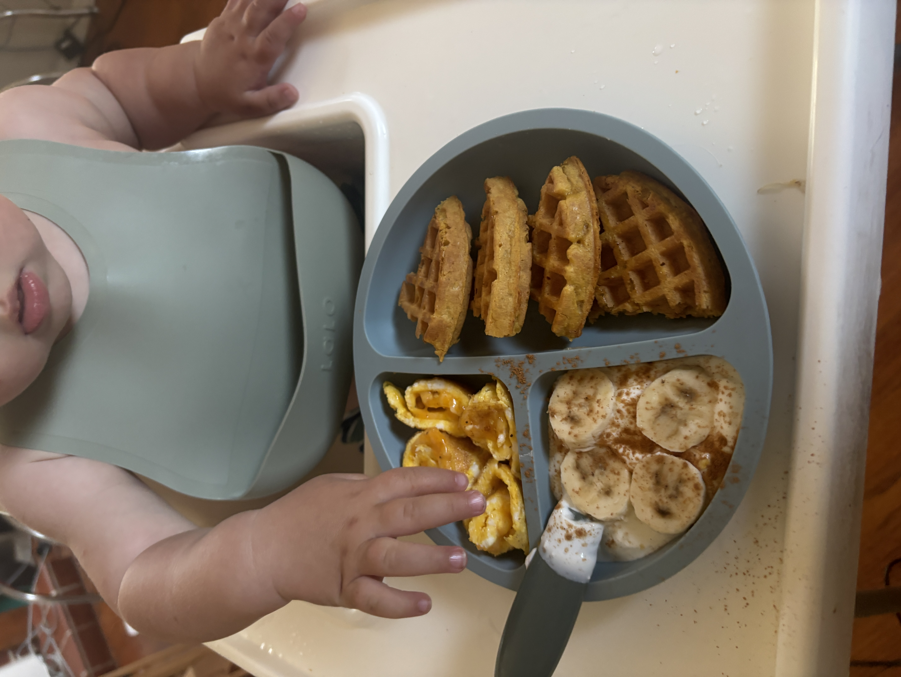
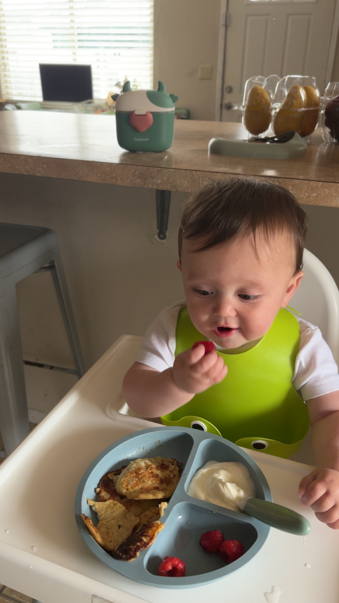
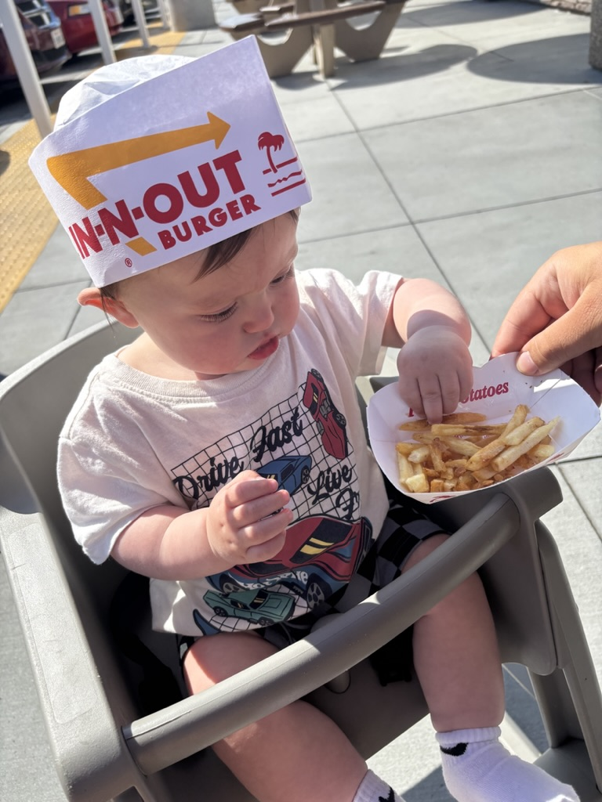
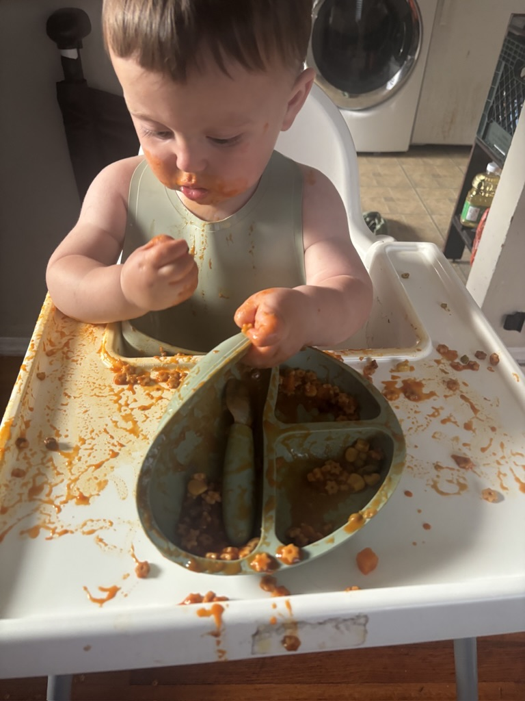

toddler meals
so i have a now one year old and its been pretty hard to be creative in comming up with meals for him. i would say im somewhat lazy but also a tiny bit granola so this reflects that
tj's frozen pumpkin waffles, yogurt w bananas, egg n cheese roll ups
he didnt eat much of the waffles but i think its bc i dont have a toaster so i cooked them in the oven so the texture was weird. greek yogurt is always a hit. he still doesnt like eggs
pancake
this boy does like his pancakes, paired here with greek yogurt and raspberries which he devoured
fry guy
went to innout when he turned 9 months bc 9 months in n 9 months out (trust me its a common thing to see if you are on the parenting side of the internet). anyways he loves fries. Especially at the beggining of eating solids, he probably ate too many fries because they were the only thing we ordered that was "kid safe" to eat.
gerbers instant meals
30 seconds in the microwave is so easy. i promise i do cook for him but sometimes theres nothing in the fridge and no inspiration so thats when these come in. this is the pasta stars, he has also had one with beef and mashed potatoes but didint like it as much.